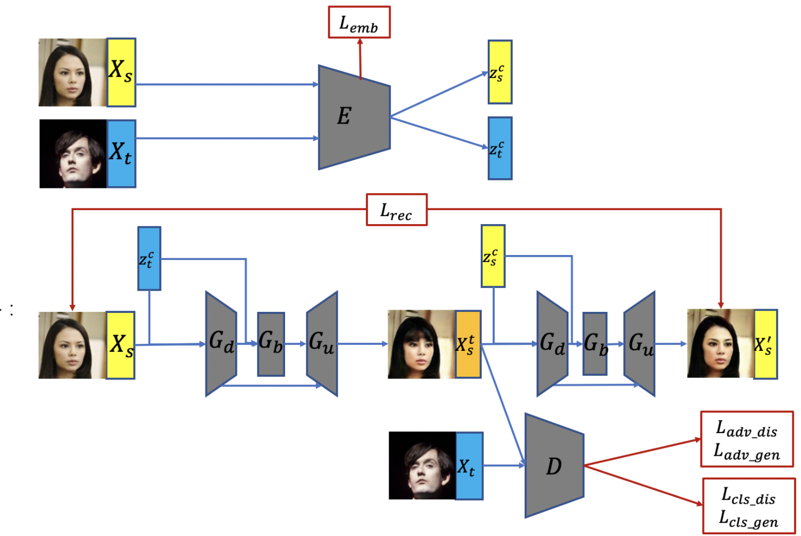

Embedding Generative Adversial Nets for Multi-domain Unpaired Image-to-Image Translation
Zirui Jiao Zijian Zhao Hui Chen
Institute of Software, Chinese Academy of Sciences
2018-2019
The first the column are input images, and the last column are target images. We set the attribute to the hairstyle of the face image, then our model can output a continous change process just as the middle columns.
Abstract
Image-to-image translation is a class of vision and graphics problems where the goal is to learn the mapping between an input image and an output image using a training set of aligned image pairs. However, for many tasks, paired training data will not be available. We present an approach for learning to translate an image from a source domain X to a target domain Y in the absence of paired examples. Our goal is to learn a mapping G: X → Y, such that the distribution of images from G(X) is indistinguishable from the distribution Y using an adversarial loss. Because this mapping is highly under-constrained, we couple it with an inverse mapping F: Y → X and introduce a cycle consistency loss to push F(G(X)) ≈ X (and vice versa). This project also aimes to develop a model architecture that can produce the continous changing process of multi-domain attributes. We tested our model on the CelebA and multiPIE and got a good result.
Paper
Submitted to ICCV 2019.
Code: Unreleased
Model Design for EGAN
We developed an embedding generative adversarial networks (GAN) to transfer specific face attributes from target face to source face, implemented in Tensorflow. To make the model can ouput the changing process, we built an embedding pretrained network to extract face attribute features on the top of generative adversarial nets, that enables our model to use interpolation between extracted source feature and target feature to generate a continuous changing process.
How to Understand the Architecture: EGAN, as well as any GAN-based method, is fundamentally hallucinating part of the content it creates. Its outputs are predictions of "what might it look like if ..." and the predictions, thought plausible, may largely differ from the ground truth. The model can be seperated into two parts. The first part is the embedding network, as indicated by the first half of the this figure, we used a contrasive learning network to learn the feature embedding of input and target images. Then the target feature code and the input are fed into the generator to get a translated image, the translated image and the input feature code are fed into the generator again to get a reconstructed image. The reconstruction loss makes the generator doesn't lose too much information in the input image, especially the people identity. The discriminator executes two tasks, one is to classify if this image is generated, another is to decide if this image has the right attribute, to be specific, the same selected attribute as the target image. For example, in our settings, we chose hairstyle, expreesion(smile or not smile) and haircolor as our training attributes, once the training process is ended, the model can take in two images and transfer these attributes from the target image to the input image. However, you can transfer three attributes at the same time, you can aslo transfer one attribute like haircolor if you like.
Results in our Paper
Haircolor transfer by model only trained on one domainThis model is only trained on the haircolor domain. The first column are input images, the last column are target images, the middle columns are the changing process. |
Haircolor transfer by model trained on multi-domainsThis model is trained on multi-domains at the same time, in the test time we only selected the haircolor domain to see whether jointly learning other domains will have effects on single domain. The first column are input images, the last column are target images, the middle columns are the changing process. |
Smile Expreesion transfer by model only trained on one domainSame setting as previous. |
Smile Expreesion transfer by model trained on multi-domainsSame setting as previous. |
Multi-domain transferSame setting as previous. We can see if we try to transfer three domains at the same time, the preformance will drop significantly. |
Acknowledgment
I want to thank Zirui Jiao, Fengchun Qiao, Hui Chen for helping me to complete this project. Also, I want to thank Human-Computer Interaction Technology and Intelligent Information Processing Lab for providing the computing resoures for this project.